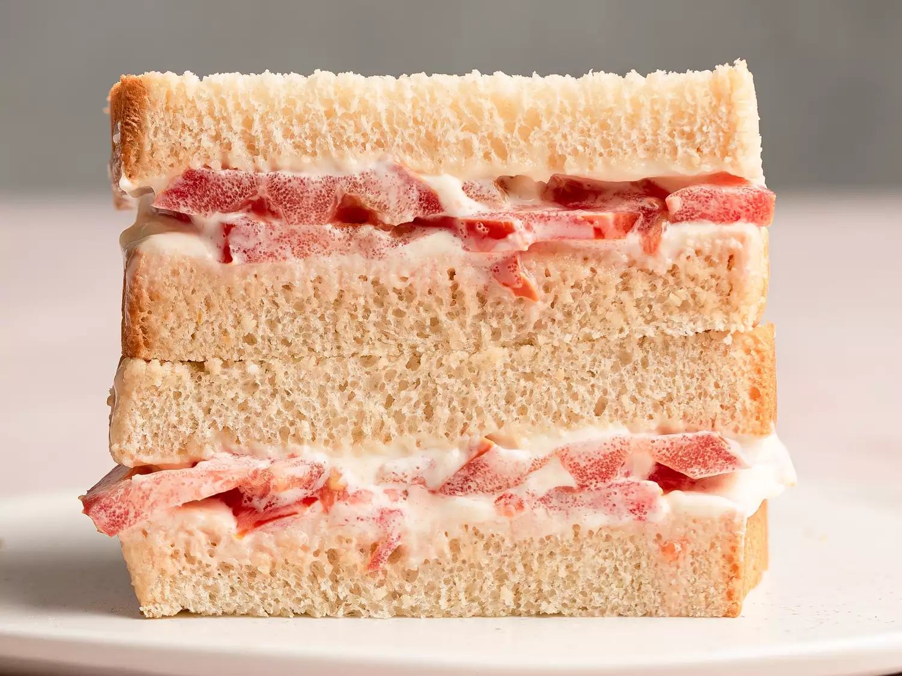

Southern Tomato Sandwich

Juicy tomato blends with mayonnaisee, it makes a delicious, creamy, slightly tangy, and flavorful sauce.
Prep time:
5 mins
Total Time:
5 mins
Servings:
1
Ingredients
- 1 tablespoon mayonnaise, or more to taste
- 2 slices white bread
- 4 thin slices ripe tomato
- ¼ teaspoon kosher salt
- ½ teaspoon freshly ground black pepper
Instructions
- Gather all ingredients.
- Spread 1 to 2 tablespoons mayonnaise (depending on taste) evenly over both slices of bread.
- Place two slices of tomato on one slice of bread and sprinkle with half of the salt and pepper.
- Add two more slices of tomato and sprinkle with remaining salt and pepper
- Place second slice of bread, mayonnaise side down, on the top.
- Slice and Enjoy!
Back to homepage